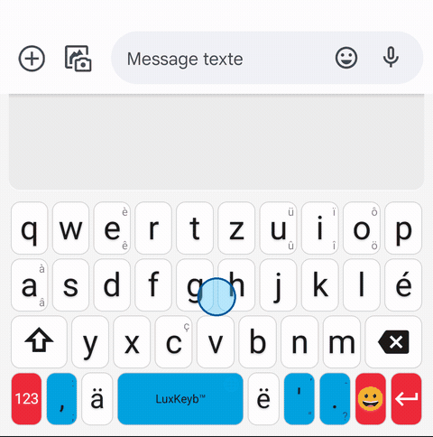
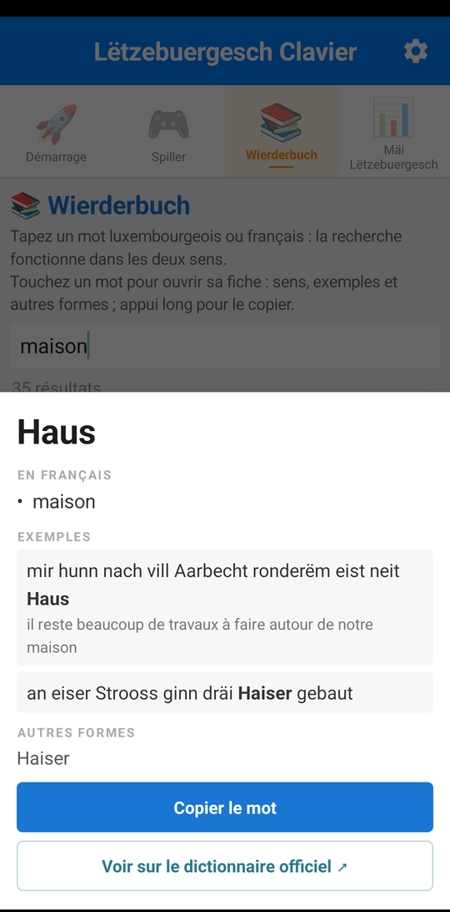
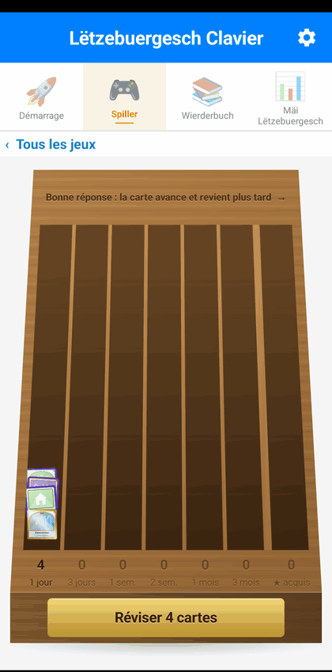

Dossier institutionnel
Permettre aux Luxembourgeois d'écrire leur langue
Aujourd'hui, écrire un message en luxembourgeois, c'est se battre contre son propre téléphone. Ces cinq documents décrivent un clavier qui répond à ce problème, ce qu'il apporte à la langue, et ce qu'il faudrait pour qu'il devienne un outil public.
Document public · septembre 2026 · version 26.2.0 de l'application
1 · Note d'opportunité
Pour déciderLe problème tel qu'il est vécu, l'outil qui y répond, et la proposition. Le luxembourgeois s'écrit surtout dans des messages, et c'est précisément là qu'il n'est pas équipé, alors que le français et l'allemand le sont, sur le même appareil. Douze minutes de lecture, et c'est le seul document indispensable.
2 · Feuille de route et livrables
Pour instruireLes trois chantiers détaillés (rendre l'outil visible, élever sa qualité linguistique avec le ZLS, couvrir l'iPhone), avec pour chacun les livrables, les dépendances et ce qui peut être fait sans attendre le reste.
3 · Fiche technique
Pour vérifierComment l'application est faite, comment le dictionnaire est fabriqué à partir des jeux du ZLS, et comment les chiffres de qualité sont obtenus. Tout est rejouable : les scripts sont publics et l'intégration continue refuse une livraison dont les données seraient dégradées.
4 · Licences et réutilisation
Pour sécuriserFichier par fichier : d'où viennent les données, sous quelle licence, et ce que l'État aurait le droit d'en faire. Y compris le point qui demande une décision : six fichiers portent une clause non commerciale, et la variante entièrement CC0 déjà mesurée.
5 · Dossier de presse
Pour raconterFaits clés, chiffres, visuels libres de reproduction, angles éditoriaux et contact. Destiné aux journalistes et aux services de communication, il ne demande rien et n'argumente pas.
Ce que le dossier propose, en une phrase
La proposition
Faire du Lëtzebuergesch Clavier un outil public, pour que chacun puisse écrire sa langue sur son téléphone aussi facilement qu'il y écrit le français ou l'allemand.
L'application existe, elle fonctionne, et elle s'appuie sur le dictionnaire officiel de la langue. Ce qui lui manque est ce qu'un projet individuel ne peut pas se donner à lui-même : être connue de ceux à qui elle sert, validée par des linguistes, et maintenue au-delà de la disponibilité d'une seule personne.
Trois chiffres pour situer
Toutes les mesures citées dans ce dossier portent sur les fichiers réellement livrés dans l'application et sont reproductibles : les scripts sont publics, et la méthode est décrite dans la fiche technique.
Où en est le projet
Les documents ci-dessus ont été écrits sur la version 11.6. L'application en est à la 26.2, et ce qui a changé depuis ne change pas la demande, mais élargit ce qui est déjà livré : le clavier s'est doublé d'un outil d'apprentissage, construit sur les mêmes données du ZLS.
Le clavier
Disposition QWERTZ, suggestions luxembourgeoises et françaises sur deux rangées, correcteur orthographique système pour tout le téléphone. 123 297 formes reconnues, 27 746 contextes de prédiction.
Un dictionnaire dans l'application
L'onglet Wierderbuch cherche dans les deux sens, du luxembourgeois vers le français comme l'inverse : 88 883 formes glosées, 26 149 mots illustrés par une phrase du LOD, dont 3 677 accompagnées de la traduction officielle de l'État.
Sept jeux de vocabulaire
Mots cachés, anagrammes, mot à deviner, phrase à trou, nombres en lettres, mots croisés et mots à placer. Les mots croisés sont le seul jeu qui fasse écrire les mots, accents et majuscules compris ; les mots à placer, le seul qui se joue sans connaître la langue.
Un carnet et sa révision
Un mot gagné devient une carte, et les cartes reviennent à intervalles croissants, de un à quatre-vingt-dix jours. Le clavier sert d'examen : un mot réellement tapé monte d'un cran sans rien demander, et ce que l'utilisateur écrit ne quitte jamais l'appareil.
{kind=link}

{kind=link}


{kind=link}

L'application se télécharge en test fermé sur Google Play, ou directement en APK depuis GitHub. Le détail version par version est sur la page Nouveautés.
Contact
Médhi Famibelle, auteur du projet.
medhi.famibelle@gmail.com
Échanges possibles en français, en anglais ou en allemand.
Une synthèse en dix pages existe également, destinée à un premier contact plutôt qu'à l'instruction : le pitch deck.
Pour juger sur pièce sans rien installer : le simulateur en ligne reproduit le clavier dans un navigateur. Le code est sur GitHub.